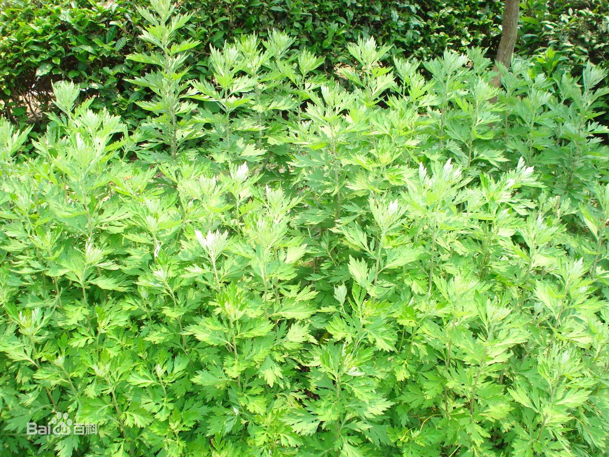
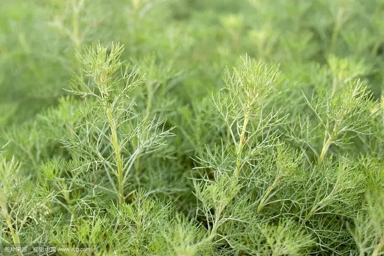
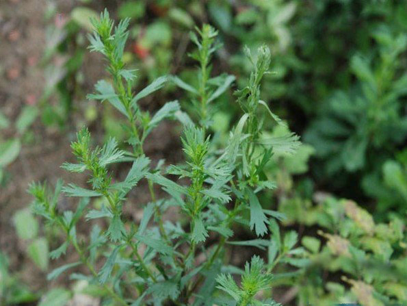

诗中的蒿药
于以采蘩，于沼于沚。于以用之，公侯之事。
：这是《诗经·召南·采蘩》的第一章， 描写为公候采摘蘩蒿的情景。古人将草之高者称为蒿，《诗经》中的蒿类植物有蘩、蒌、萧、艾、蓬、蓍、苹、蒿、芩、莪、蔚等，它们或是味美的蔬菜，或是祭祀的贡品，或是治病的良药。
蒌蒿
- “翘翘错薪，言刈其蒌。之子于归，言秣其驹。”（《周南·汉广》）薪柴众多杂又乱，割下蒌蒿放身边。这位姑娘要出嫁，我喂马驹忙不迭。
诗中的蒌，为菊科蒿属植物蒌蒿。蒌蒿又名芦蒿，多生于河湖岸边与沼泽地带，气味清香，嫩茎叶可作为蔬菜。
- “竹外桃花三两枝，春江水暖鸭先知。蒌蒿满地芦芽短，正是河豚欲上时。”（苏轼《惠崇春江晚景二首其一》）蒌蒿可解河豚之毒，
古人常将蒌蒿和河豚搭配食用，南宋辛弃疾《蒌蒿宜作河豚羹》曰：“河豚挟鸩毒，杀人一脔足。蒌蒿或济之，赤心置人腹。”蒌蒿还可以全草入药，具有利膈开胃的功效，可治疗食欲不振。

白蒿
- “春日迟迟，卉木萋萋。仓庚喈喈，采蘩祁祁。”（节选自《小雅·出车》）春风拂面日迟迟，草木茂盛叶萋萋。黄鹂鸣叫声喈喈，姑娘采蘩忙祁祁。
诗中的蘩，为菊科蒿属植物大籽蒿。大籽蒿的茎枝有灰白色微柔毛，故名白蒿。
-
白蒿嫩苗也可食用，《本草纲目》引《诗疏》云：“今白蒿先诸草发生，香美可食，生蒸皆宜。”

杜蒿
- “蓼蓼者莪，匪莪伊蔚。哀哀父母，生我劳瘁。”（节选自《小雅·蓼莪》）高高大大抱娘蒿，不是莪蒿是蔚蒿。我的父母真可怜，
育我累病受苦劳。诗中的蔚，为菊科蒿属植物牡蒿。
-
牡蒿因种子极为细小而得名，《本草纲目》载：“蔚，牡菣，蒿之无子者。则牡之名以此也。”
- “聿当霜霰候，蔚有春阳姿。道心与之然，把玩恒自怡。”（明代朱浙《题晚斋卷》）牡蒿以全草入药，具有清热、凉血、解毒的功效，用于肺结核潮热、小儿
疳热、黄疸型肝炎、丹毒、毒蛇咬伤的治疗。
